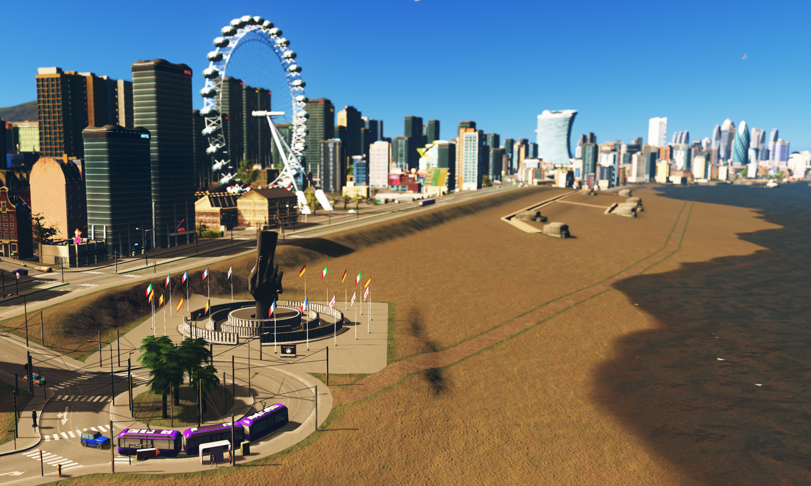
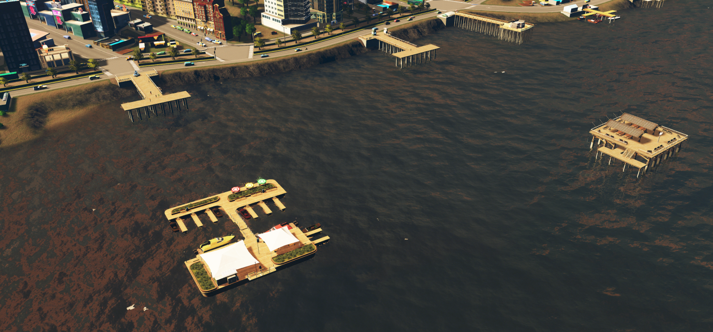
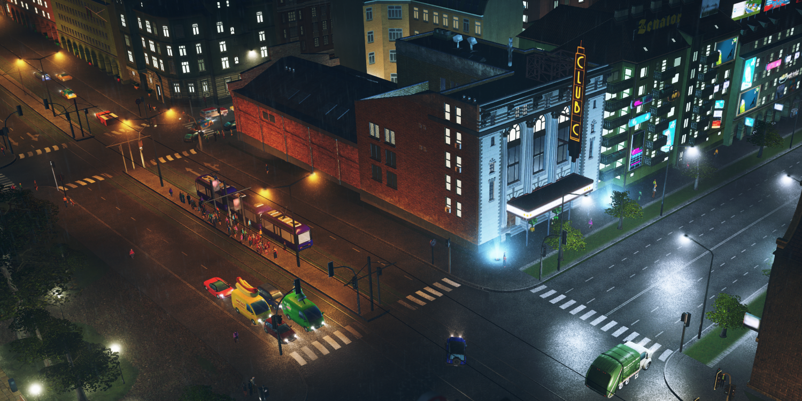
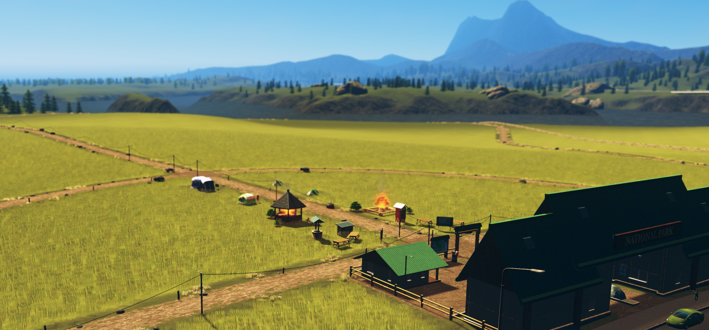
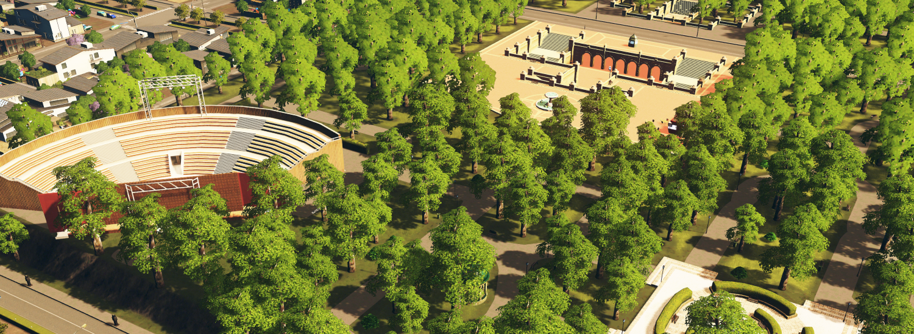

City of Avelburg Tourism - Attractions
Welcome to the website for the city of Avelburg's attractions! If you're interested in seeing the many forms of entertainment, landmarks, monuments, and other ways to spend your days in Avelburg, this is the right page for you.

The Beachfront
Just west of downtown, the sea meets Avelburg in a beatiful beachfront. Travel on the postcard-worthy boardwalk trams, ride the ferris wheel, enjoy a bite to eat at a pier cafe, or walk along the beach. A favorite for history buffs is the World War 2 memorial, complete with an immaculately-kept original beach combat trench. The hotels and shopping centers are plentiful here, so you could easily spend a weekend on the beach.
 Music Scene
Music fans have a lot to enjoy in Avelburg. Up in the hip and happening University City and Filgraffi suburbs, students and young adults flock to the clubs at night, where both underground and world-famous acts come to perform. Club C in University City is the most famous of these venues, hosting artists on at least a weekly basis. The Festival Grounds, just across the freeway, hosts huge festivals every summer for every music genre.

Parks
For the nature-lovers out there, Avelburg still has you covered. The city is dotted with parks and green spaces, as well as surrounded with picturesque mounntains and a large nature reserve. No matter what kind of experience you're wanting, an extended camping stay or a quick jog between appointments, there's a spot you'll find perfect.
 